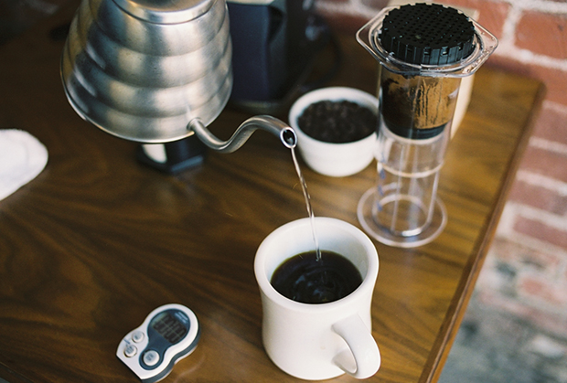
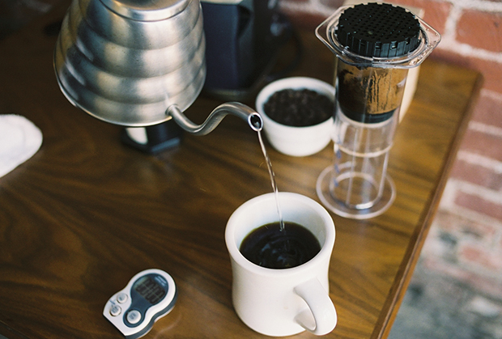

The AeroPress coffee maker utilizes a breakthrough in the coffee brewing process to yield the smoothest, richest coffee that you have ever tasted.
The AeroPress coffee maker is a new kind of coffee press that brews coffee under ideal conditions: proper temperature, total immersion, and rapid filtering. This results in amazingly delicious coffee with a wide range of beautiful flavors but without bitterness and with very low acidity. Since its introduction the AeroPress has become a much beloved brewer for serious coffee lovers and coffee professionals around the world.
The AeroPress coffee maker is most commonly used in the home kitchen but it is lightweight, compact, and durable, making it ideal for use when camping, backpacking, boating, or just traveling. The AeroPress is available with a zippered nylon tote bag (see photo at left) that makes it easy to travel with the coffee maker and a bag of coffee. Packs of 350 replacement filters (see photo at left) can be purchased from many retailers that carry the AeroPress.
Features
- Rapid, total immersion brewing process makes delicious full flavored coffee without bitterness
- Makes 1 to 3 cups per pressing in about one minute
- Brews regular American style coffee
- Brews espresso style coffee for use in lattes and other espresso based drinks
- Microfilter means no grit in your cup (unlike a French press)
- Clean up takes just seconds
- Available with zippered nylon tote bag - great for travel
- Bisphenol-A (BPA) and phthalate free
- Made in the U.S.A.
Interested in the AeroPress Coffee maker? Fill out this form to recieve more information, including how to purchase!
 
